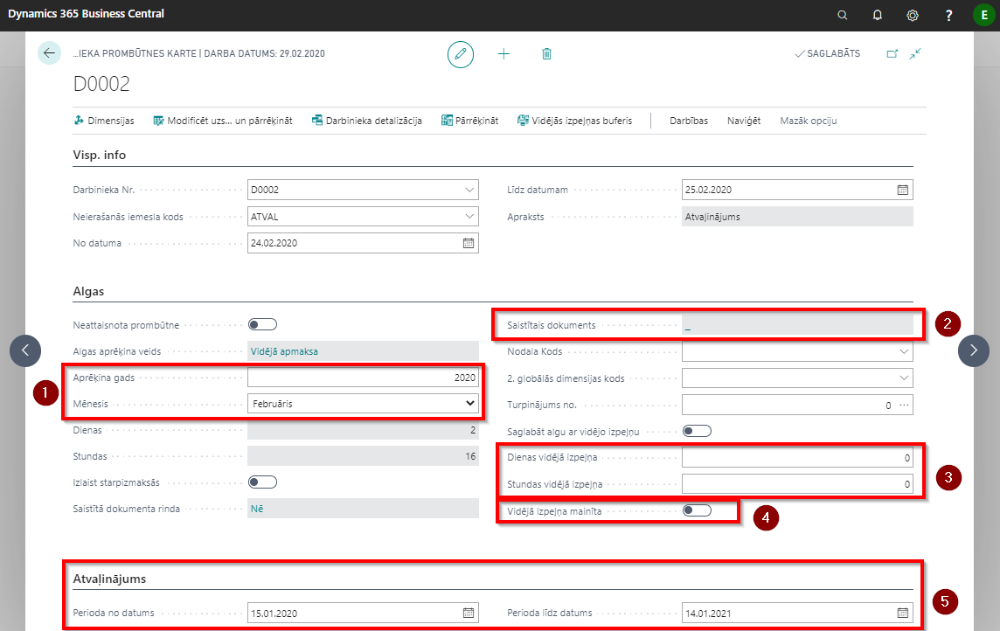

Darba laika izmaiņu reģistrācija
Visas nobīdes no plānotā darba laika par darbinieku jāievada Prombūtnes reģistrācijas žurnālā Lomu centrs - Prombūtnes - Prombūtnes reģistrācija. Nospiežot pogu Jauns izveidojas jauns ieraksts, kur sākuma cilnē Visp. info ievada darbinieka Nr., prombūtnes kodu un periodu No datuma, Līdz datumam. Prombūtnes kodus nodefinē Lomu centrs - Prombūtnes - Prombūtnes iemesli.
Prombūtnes reģistrācija
Cilnē Algas daži lauki aizpildās automātiski. Jāpievērš uzmanība Aprēķina gadam, mēnesim  – te jābūt norādītam mēnesim, kurā algu aprēķinā jāiekļauj konkrētā informācija. Sākotnēji ievadot prombūtni mēnesis tiek noteikts pēc sākuma datuma. Ja pārejoša slimības lapa tiek iesniegta pēc algu aprēķina (algu aprēķins izmaksāts vai iegrāmatots), tad aprēķinu iespējams veikt slimības lapas beigu mēnesī. Pārrēķinu ierakstiem pēc noklusējuma tiek norādīts nākamais mēnesis, par kuru nav izveidots algu saraksts.
– te jābūt norādītam mēnesim, kurā algu aprēķinā jāiekļauj konkrētā informācija. Sākotnēji ievadot prombūtni mēnesis tiek noteikts pēc sākuma datuma. Ja pārejoša slimības lapa tiek iesniegta pēc algu aprēķina (algu aprēķins izmaksāts vai iegrāmatots), tad aprēķinu iespējams veikt slimības lapas beigu mēnesī. Pārrēķinu ierakstiem pēc noklusējuma tiek norādīts nākamais mēnesis, par kuru nav izveidots algu saraksts.

Lauks Saistītais dokuments  un Dienas vidējā izpeļņa
un Dienas vidējā izpeļņa  aizpildās tad, kad tiek veikts aprēķins par prombūtni. Ja nepieciešams mainīt vidējo izpeļņu, to pirms aprēķina manuāli ievada laukā Dienas vai Stundas vidējā izpeļņa (pazīme Vidējā izpeļņa mainīta
aizpildās tad, kad tiek veikts aprēķins par prombūtni. Ja nepieciešams mainīt vidējo izpeļņu, to pirms aprēķina manuāli ievada laukā Dienas vai Stundas vidējā izpeļņa (pazīme Vidējā izpeļņa mainīta  ).
).
Izvēloties kodu Slims_A un ievadot slimības lapas datumus No un Līdz, ja amata kartiņā ir ķeksis Grafiks/Uzskaite, automātiski tiek atvērts konkrētā mēneša un darbinieka Grafiks, kurā iespējams ievadīt darbiniekam paredzēto darba laiku slimības dienās.
Visi šajā prombūtnes reģistrā veiktie ieraksti ir jāiekopē arī darba laika uzskates tabelē, ja tabele ir jau uzģenerēta: Uzskaites – atveriet nepieciešamo uzskaites kartiņu - Apstrādāt - Kopēt no prombūtņu reģistra. Ja tomēr tas nav izdarīts, ģenerējot algu sarakstu, sistēma kā primāro uztvers Prombūtnes reģistrā norādīto informāciju, nevis to, kas iekļauta Uzskaites tabelē.
Cilnē Atvaļinājums tiek parādīts periods, uz kuru atvaļinājuma prombūtne tiek attiecināta  .
.
| Lauka nosaukums | Apraksts |
|---|---|
| Darbinieka Nr | No saraksta izvēlēts darbinieks, kam reģistrējama prombūtne. |
| Neierašanās iemesla kods | No saraksta izvēlēts kods. |
| No datuma | Datums, no kura ir spēkā prombūtne. |
| Līdz datumam | Datums, līdz kuram ir spēkā prombūtne. |
| Apraksts | Neierašanās iemesla koda nosaukums, sistēmas ģenerēts lauks. |
| Neattaisnota prombūtne | Atzīme, ka prombūtne ir neattaisnota un samaksa nav jāaprēķina. |
| Algas aprēķina veids | Uzstādījumi no prombūtņu saraksta, sistēmas ģenerēts lauks. |
| Aprēķina gads | Sistēma ievada automātiski, vadoties pēc prombūtnes datuma. Rediģējams lauks. |
| Aprēķina mēnesis | Sistēma ievada automātiski, vadoties pēc prombūtnes datuma. Rediģējams lauks. |
| Dienas | Sistēma ievada automātiski, vadoties pēc darbiniekam piešķirtā kalendāra. |
| Stundas | Sistēma ievada automātiski, vadoties pēc darbiniekam piešķirtā kalendāra. |
| Izlaist starpizmaksās | Ja ieslēgts, tad aprēķinātā prombūtnes samaksa netiks izmaksāta starpizmaksās. |
| Saistītā dokumenta rinda | Sistēma norāda automātiski, ja ierakstam pastāv saistīts dokuments. |
| Saistītais dokuments | Sistēma norāda automātiski - tad, kad tiek veikts aprēķins par prombūtni. |
| 1. globālās dimensijas kods | Norāda globālo dimensiju ja nepieciešams. |
| 2. globālās dimensijas kods | Norāda globālo dimensiju ja nepieciešams. |
| Turpinājums no | Funkcija prombūtņu sasaistīšanai. Ja darbiniekam ievadīta virkne prombūtnes, kurām jābūt aprēķinātām ar vienādu vidējo izpeļņu, tad šajā laukā jānorāda iepriekšējā prombūtne. |
| Saglabāt algu ar vidējo izpeļņu | Ieslēdz, ja vēlas prombūtnes laikā darbiniekam saglabāt algu ar vidējo izpeļņu. |
| Dienas vidējā izpeļņa | Ja nepieciešams mainīt dienas vidējo izpeļņu, to pirms aprēķina manuāli ievada laukā. |
| Stundas vidējā izpeļņa | Ja nepieciešams mainīt stundas vidējo izpeļņu, to pirms aprēķina manuāli ievada laukā. |
| Vidējā izpeļņa mainīta | Sistēma ieslēdz automātiski, ja ierakstītas vērtības dienas vai stundas vidējās izpeļņas lauciņos. |